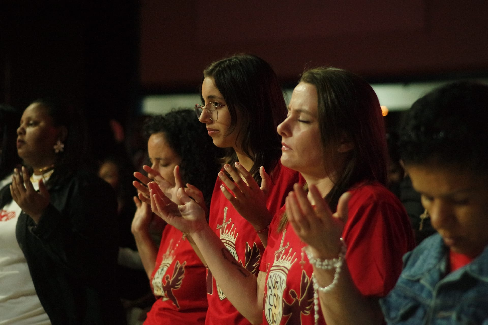
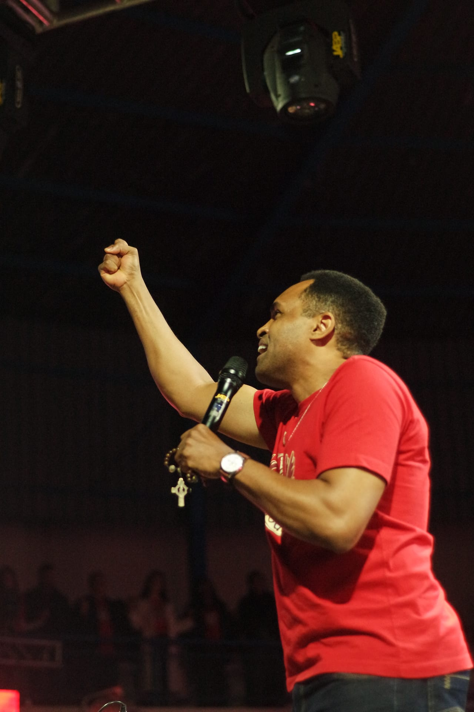
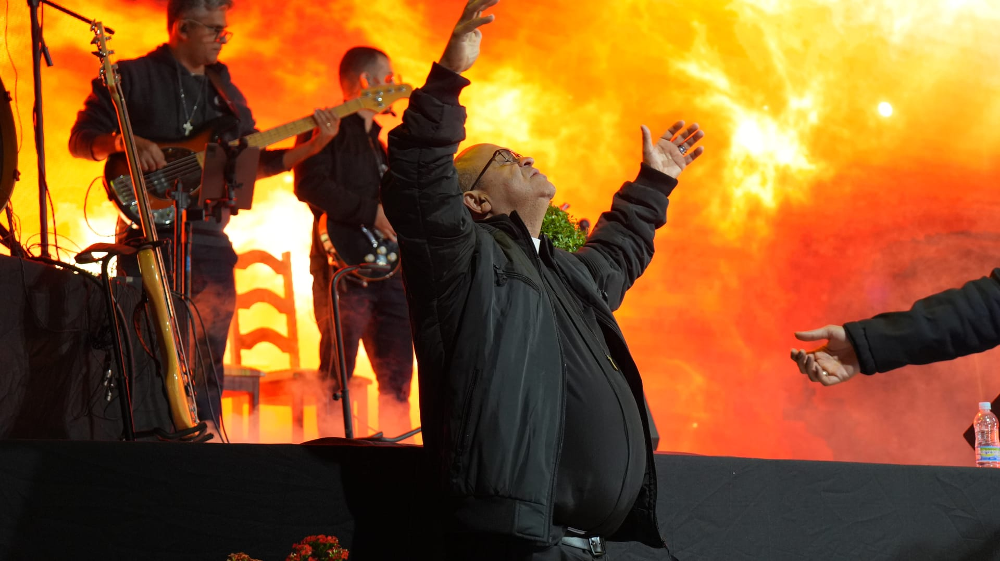
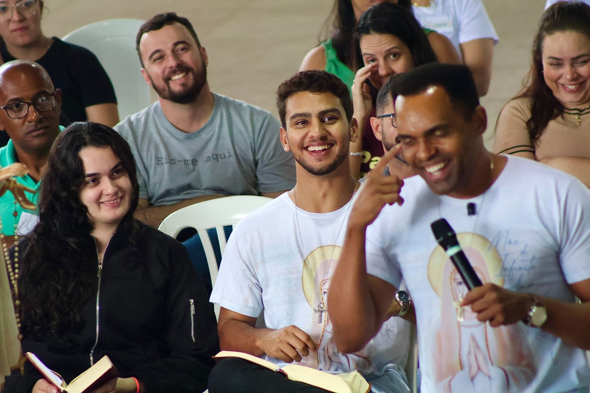

Plantados para multiplicar
Reconhecida pela Diocese de Campos em 2013, com decreto definitivo em 2018, a comunidade serve no Rio de Janeiro, em Minas Gerais e no Espírito Santo, com missionários até nos Estados Unidos.

Uma só missão
17 projetos e núcleos · RJ e MG
Comunidade Trindade SantaItaperuna
Nascer JovemItaperuna
Projeto BartimeuItaperuna
Rede Santa MônicaItaperuna
ConfiaItaperuna
BartimeuPorciúncula
Tempo de LiberdadeBom Jesus do Itabapoana
BartimeuMiracema
BartimeuMuriaé
Núcleo MuriaéMG
Núcleo MacaéRJ
Núcleo Rio das OstrasRJ
Núcleo Casimiro de AbreuRJ
Novas VestesMiradouro, MG
Águas ProfundasSanta Maria Madalena
Aviva JovemMacuco
ReconstruçãoEspera Feliz, MG
NúcleoMacaé
NúcleoCasimiro de Abreu
Aviva
Jovem
Jovem

Deus Pai
As mãos que sustentam o mundo.

Deus Filho
A cruz.

Espírito Santo
A chama.

Noite Oracional
Quem Como Deus
Uma noite inteira de oração com os arcanjos Miguel, Gabriel e Rafael.
Conheça

Congresso SETA
Seguir a Trilha do Amor: o maior congresso católico da região.
ConheçaPróximas datas

Onde estamos
Ver o mapa